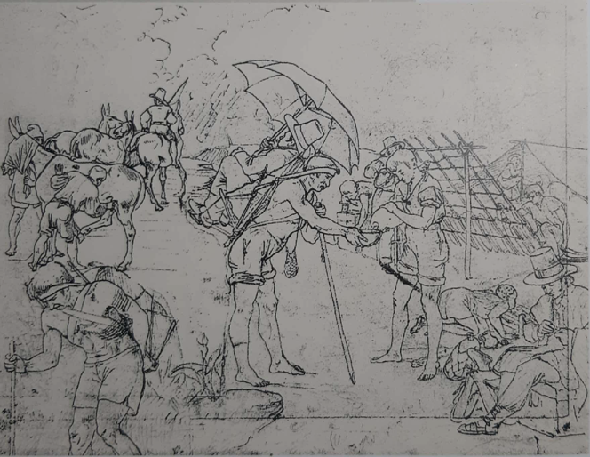
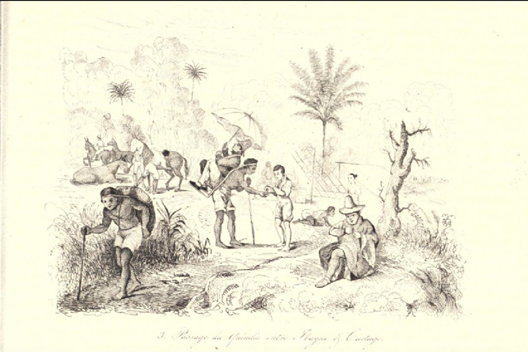
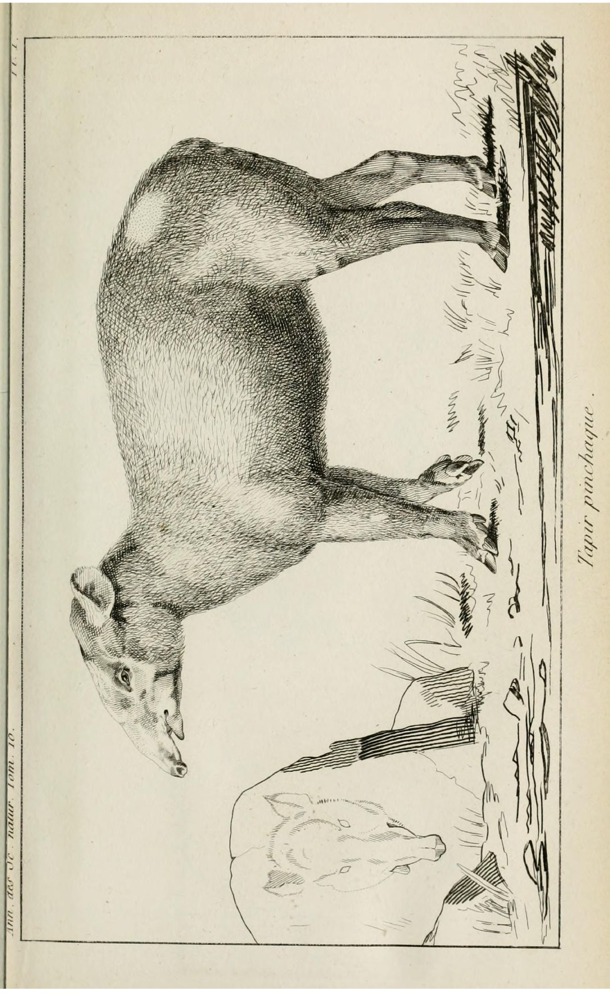
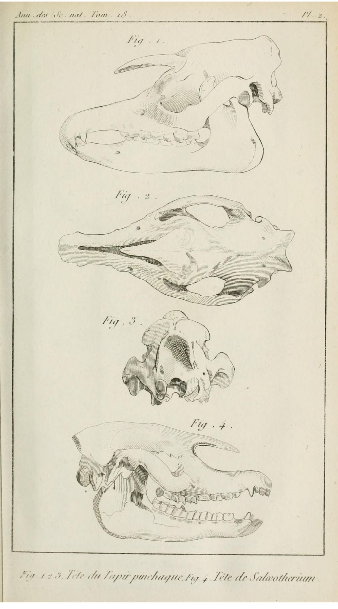
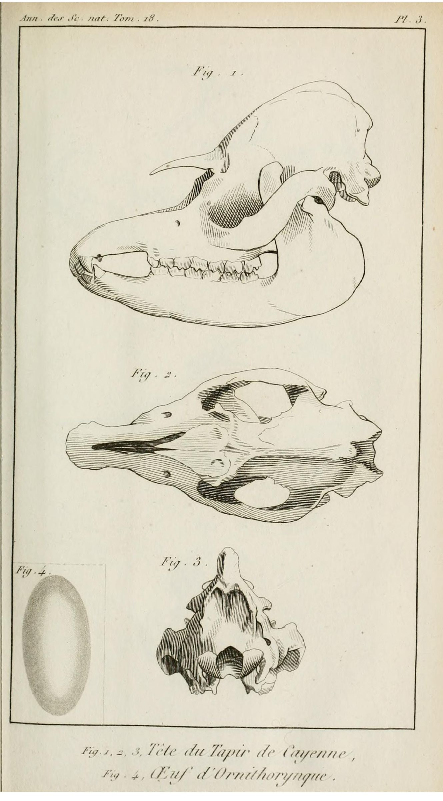
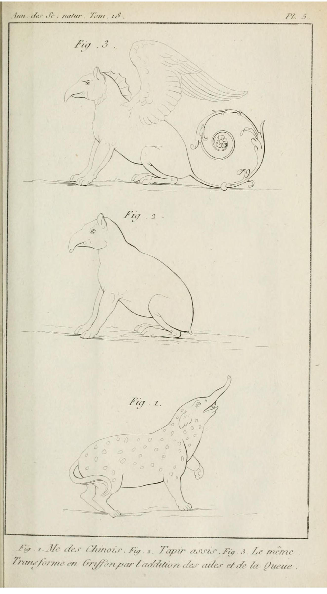
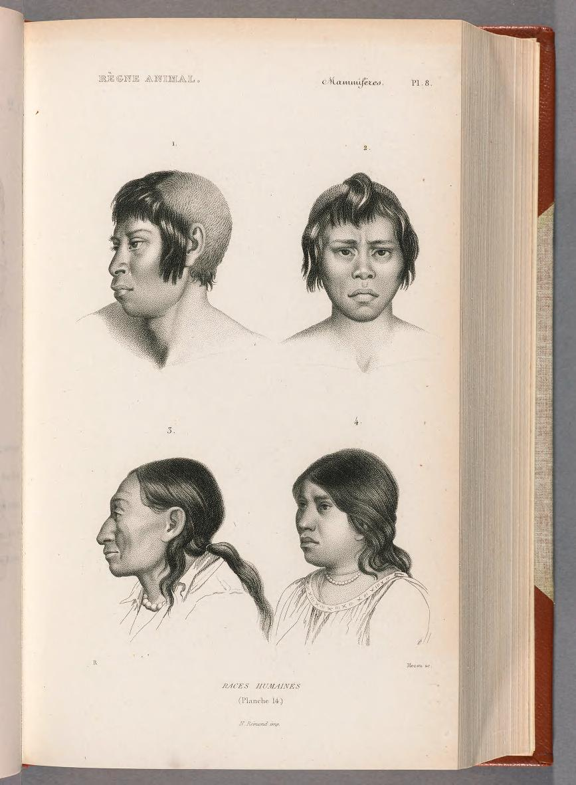
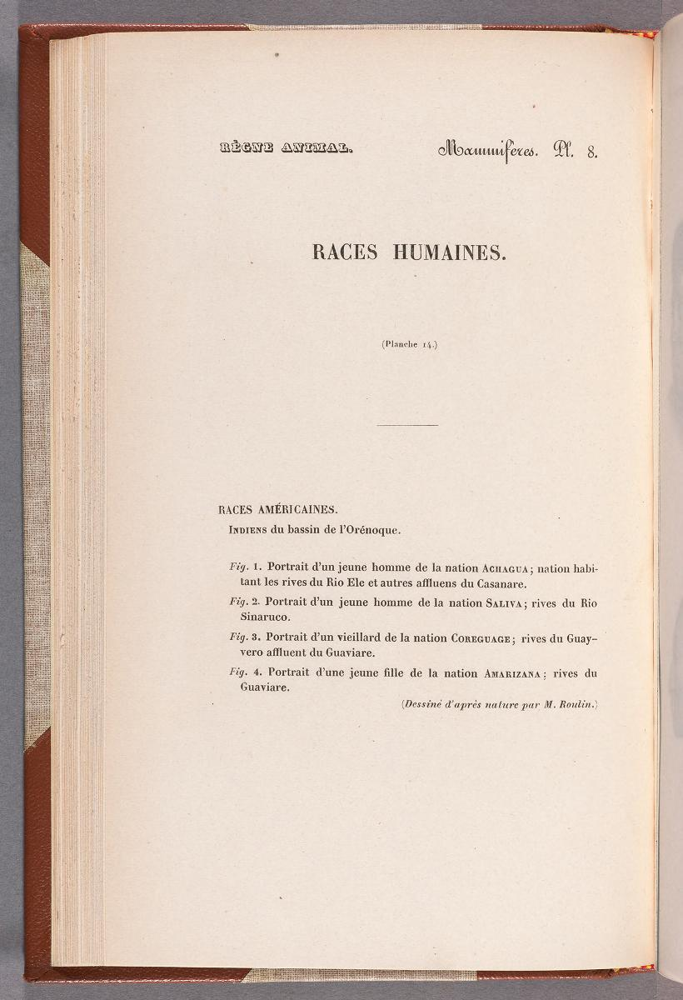
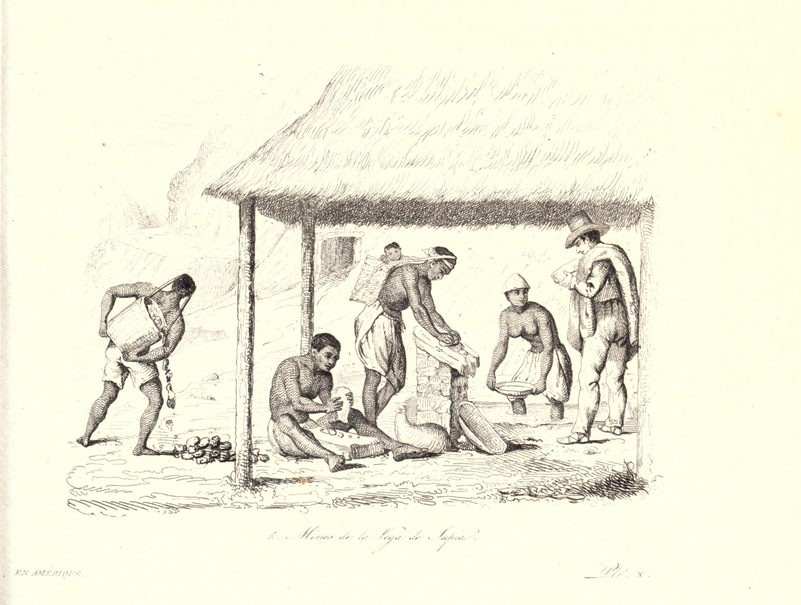
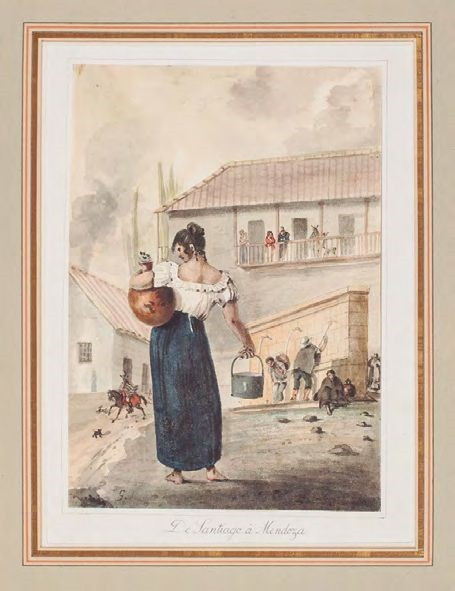

Repositorio
35 entidades · modo demo

Campamento camino del Quindio

View of the pass from Quindio. In the province of Popayan & cargueros (or carriers) who travel it

Le passage du Quindiu entre Ibague y Cartago

La silla: maniére de porter les voyageurs dans le Quindiu

Tapir Pinchaque

Tete du Tapir Pinchaque

Tete du Tapir Du Cayenne

Tete du Tapir de Sumatra

Me de Chinois, Tapir assis, Le meme transforme en Griffon

Planche 14. Races Humanes. Races Americaines. Indiens du Bassin de l'Orinoque

Planche 14. Races Humanes. Races Americaines. Indiens du Bassin de l'Orinoque

Bords de la Magdelaine. Ménage d'une famille de pêcheur (Orillas del Magdalena. Hogar de una familia de pescadores)

Place de St. Victorin, à Bogotá (Plaza de San Victorino, en Bogotá)

Mines de la Vega de Supia

Mujer con Balde
Mémoire pour servir à l'histoire du tapir
Recherches sur quelques changemens observés dans les animaux domestiques
Viajes científicos a los Andes ecuatoriales
Recherches sur les ossemens fossiles, t. 3
Voyage pittoresque dans les deux Amériques
Pauvre et aventureuse bourgeoisie: Roulin et ses amis (1796–1874)
Histoire naturelle et souvenirs de voyage
Cámara lúcida
Palaeotherium
Testimonio
Plantilla
Inscripción probatoria
Peoner i andisca bergen
Le règne animal distribué d'après son organisation (1836)
Description de l'Égypte
Explication sommaire des planches de Crustacés de l'Égypte et de la Syrie
Exploration scientifique de l'Algérie
Expédition scientifique de Morée. Section des sciences physiques
Voyage au Pôle Sud et dans l'Océanie
Voyage autour du monde sur la frégate La Vénus